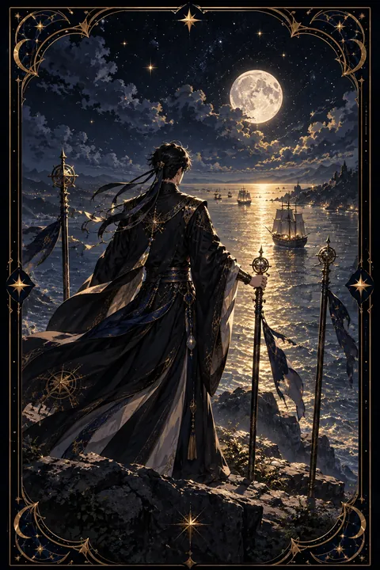

완드 3 카드 — 멀리서 돌아오는 확장의 기회
완드 3 카드 한눈에 보기
완드 3 카드 상징 읽기

동네보살의 카드 그림은 전통 라이더–웨이트 덱의 뜻을 새 그림으로 옮긴 것입니다. 아래 상징 설명은 전통 덱의 그림을 기준으로 합니다.
완드 3에는 한 사람이 등을 돌린 채 절벽 위에 서서 황금빛 바다를 바라보는 장면이 담겨 있습니다. 얼굴을 보여 주지 않는 뒷모습은 과거가 아니라 앞으로 다가올 일에 온 시선이 쏠려 있다는 뜻입니다.
바다 위를 오가는 배들은 이미 떠나보낸 노력과 계획이며 곧 돌아올 성과를 상징합니다. 바다가 금빛으로 빛나는 것은 기다림 끝에 풍요로운 결실이 준비되고 있음을 보여 줍니다.
땅에 굳게 꽂힌 세 개의 지팡이는 단단히 다져진 기반입니다. 인물은 그중 하나를 붙잡고 있어 안정된 자리를 딛고 서서 더 먼 곳을 내다보는 자세를 취하고 있습니다. 높은 절벽은 넓은 시야와 선견지명을 뜻하며 이 카드가 확장과 탐험의 시기를 가리킨다는 점을 분명히 합니다. 인물이 걸친 붉은 망토는 식지 않은 열정과 행동력을 나타냅니다.
완드 3 카드 정방향 뜻
정방향 완드 3은 그동안 해 온 일이 바깥으로 뻗어 가며 결실을 향해 움직이고 있다는 신호입니다. 계획 단계를 지나 실제로 배를 띄운 상태이므로 이제는 결과를 기다리며 다음 단계를 준비하는 시기입니다.
이 카드는 넓어진 시야를 강조합니다. 지금까지 보지 못했던 기회가 먼 곳에서 찾아올 수 있으며 해외나 다른 지역이나 새로운 분야와 연결되는 일에 특히 좋은 흐름이 있습니다. 협력자나 파트너가 나타나 일을 키우는 데 힘을 보태기도 합니다.
기다림의 시간을 헛되이 보내지 않는 것이 중요합니다. 돌아올 성과를 받아 낼 준비를 하고 다음 항로를 미리 그려 두세요. 한 번 성공한 방식을 더 넓은 범위로 적용할 방법을 고민해 보는 것도 좋습니다. 기다리는 동안에도 작은 성과를 기록해 두면 흐름을 읽는 눈이 더 밝아집니다.
완드 3 카드 역방향 뜻
역방향 완드 3은 기다리던 결과가 늦어지거나 계획이 예상대로 흘러가지 않는 상황을 보여 줍니다. 외부 사정이나 협력자의 문제로 일정이 밀릴 수 있고 기대했던 만큼의 성과가 돌아오지 않아 실망할 수도 있습니다.
이 카드는 멀리 보지 못한 준비 부족을 짚기도 합니다. 눈앞의 결과만 바라보고 서두르다 보니 중요한 부분을 놓쳤을 가능성이 있습니다.
하지만 늦어지는 것이 곧 실패를 뜻하지는 않습니다. 지금은 계획을 다시 점검하고 빈틈을 채우는 시간으로 삼아 보세요. 성급하게 판을 접기보다 조건을 조정하며 기다리는 편이 결과적으로 이득이 되는 경우가 많습니다. 여러 곳에 걸쳐 둔 일이 있다면 우선순위를 정해 힘을 모으는 것도 좋은 방법입니다. 늦어진 만큼 더 단단한 결과로 돌아오는 경우도 적지 않다는 점을 기억해 두세요.
연애에서 완드 3 카드
솔로라면 평소 생활권 밖에서 인연이 찾아올 가능성이 높은 시기입니다. 여행지나 온라인 모임이나 멀리 사는 지인의 소개처럼 뜻밖의 경로로 만남이 이어질 수 있습니다. 마음의 문을 넓게 열어 두고 새로운 사람에게 호기심을 가져 보세요.
연애 중이라면 관계가 다음 단계로 넓어지는 흐름입니다. 함께 여행을 계획하거나 미래를 구체적으로 그려 보기에 좋습니다. 장거리 연애 중이라면 두 사람의 노력이 결실을 향해 가는 모습으로 읽을 수 있습니다. 카드가 뒤집혀 있으면 상대의 답이나 진전이 더뎌지기 쉬우니 서둘러 몰아붙이기보다 자신의 생활을 충실히 채우며 기다리는 것이 관계에 도움이 됩니다. 서로 다른 곳에 있더라도 같은 목표를 바라보고 있다면 거리는 큰 문제가 되지 않습니다. 함께 기다리는 시간 자체를 즐길 줄 아는 여유가 관계를 깊게 만듭니다.
재회·속마음 질문에서 완드 3 카드
재회 질문에서 완드 3이 나오면 관계를 다시 잇는 데 시간이 필요하지만 가능성은 열려 있다는 뜻입니다. 당신이 보낸 마음이 상대에게 닿기까지 조금 더 기다려야 할 수 있습니다. 서두르기보다 거리를 두고 각자 성장한 모습으로 다시 마주할 때 흐름이 좋아집니다. 상대가 멀리 떨어져 있거나 바쁜 상황이라면 짧은 안부로 연결을 유지해 두세요. 역방향일 때는 기다림이 길어질 수 있으니 기대만 붙잡기보다 스스로의 일상을 단단히 가꾸는 것이 먼저입니다. 기다리는 동안 새로운 경험을 쌓고 시야를 넓혀 두면 다시 만났을 때 한층 여유 있는 모습으로 마주할 수 있습니다. 결과를 서두르기보다 흐름이 무르익기를 기다리는 인내가 이 카드가 전하는 열쇠입니다.
일·금전에서 완드 3 카드
일과 직장에서는 사업이나 업무가 바깥으로 확장되는 흐름입니다. 해외 거래와 다른 지역 진출과 새로운 협력처와의 연결처럼 규모가 커지는 기회가 찾아올 수 있습니다. 앞서 준비해 둔 일이 성과로 돌아오기 시작하는 시기이므로 다음 단계의 계획을 함께 세워 두면 좋습니다.
금전 면에서는 이미 뿌려 둔 노력에서 수익이 들어오는 흐름입니다. 다만 결과가 들어오는 데 시간이 걸릴 수 있으니 예상 수입을 미리 쓰기보다 여유 자금을 확보해 두는 편이 안전합니다. 판로를 넓히거나 새 고객층을 찾는 시도가 좋은 반응을 얻기 쉽습니다. 거래처나 협력자와의 연락을 꾸준히 이어 두면 기다리던 성과가 더 빨리 돌아옵니다.
완드 3 카드는 예일까 아니오일까
앞서 해 둔 노력이 결실로 돌아오고 기회가 넓어지는 카드여서 예에 가깝습니다. 다만 결과가 바로 나오기보다 시간이 조금 걸리는 흐름이며 뒤집혀 있으면 지연이 커져 조건부가 됩니다.
자주 묻는 질문
완드 3 카드 역방향은 나쁜 뜻인가요?
역방향 완드 3은 기다리던 결과가 늦어지거나 계획이 예상대로 흘러가지 않는 상황을 보여 줍니다. 외부 사정이나 협력자의 문제로 일정이 밀릴 수 있고 기대했던 만큼의 성과가 돌아오지 않아 실망할 수도 있습니다.
완드 3 카드가 연애 질문에 나오면요?
솔로라면 평소 생활권 밖에서 인연이 찾아올 가능성이 높은 시기입니다. 여행지나 온라인 모임이나 멀리 사는 지인의 소개처럼 뜻밖의 경로로 만남이 이어질 수 있습니다. 마음의 문을 넓게 열어 두고 새로운 사람에게 호기심을 가져 보세요.
타로 카드는 어떻게 뽑나요?
타로 카드 페이지에서 78장을 섞으면 그중 22장이 펼쳐집니다. 마음이 가는 세 장을 고르면 과거·현재·미래 자리에 놓이고, 한 장씩 뒤집어 자리와 방향에 맞는 풀이를 읽습니다. 정방향과 역방향은 섞는 순간 정해집니다.